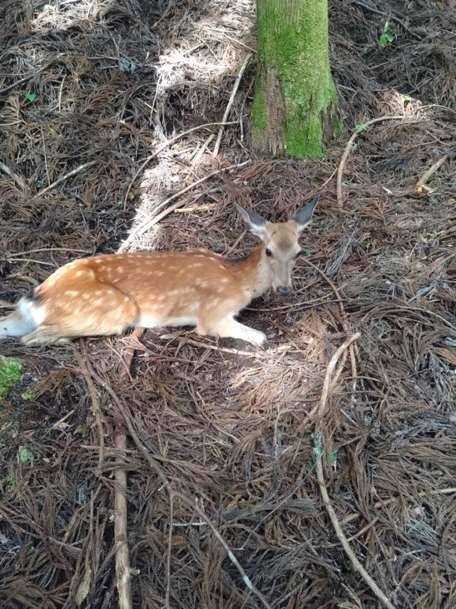
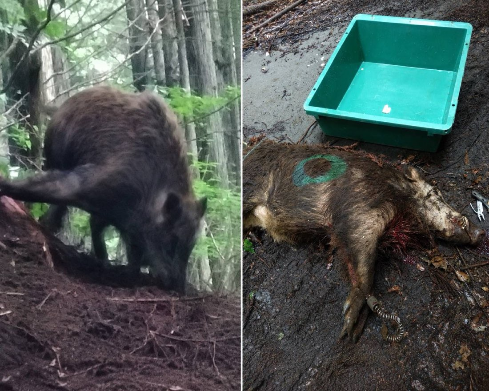
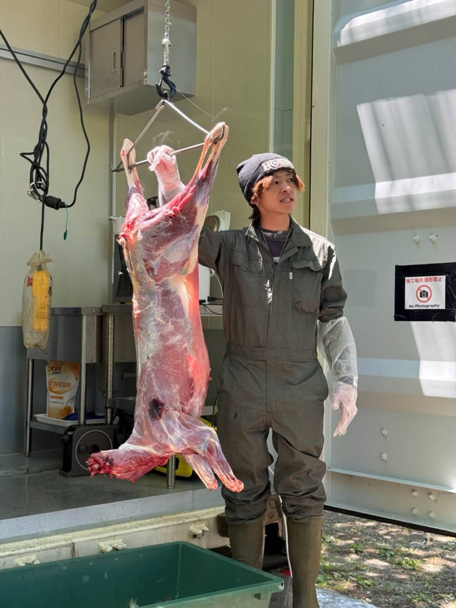
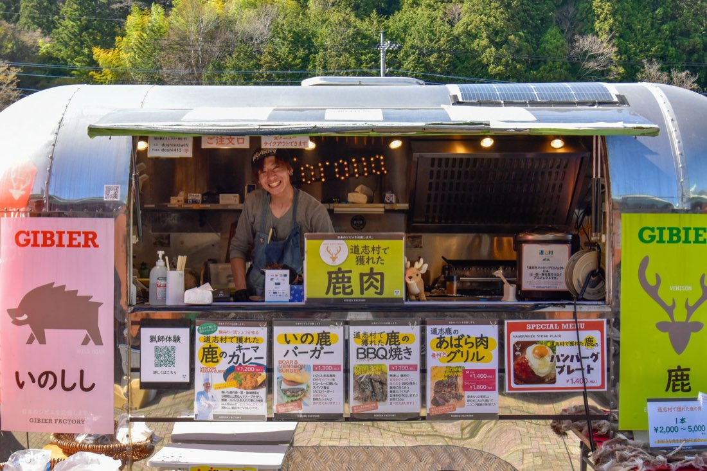
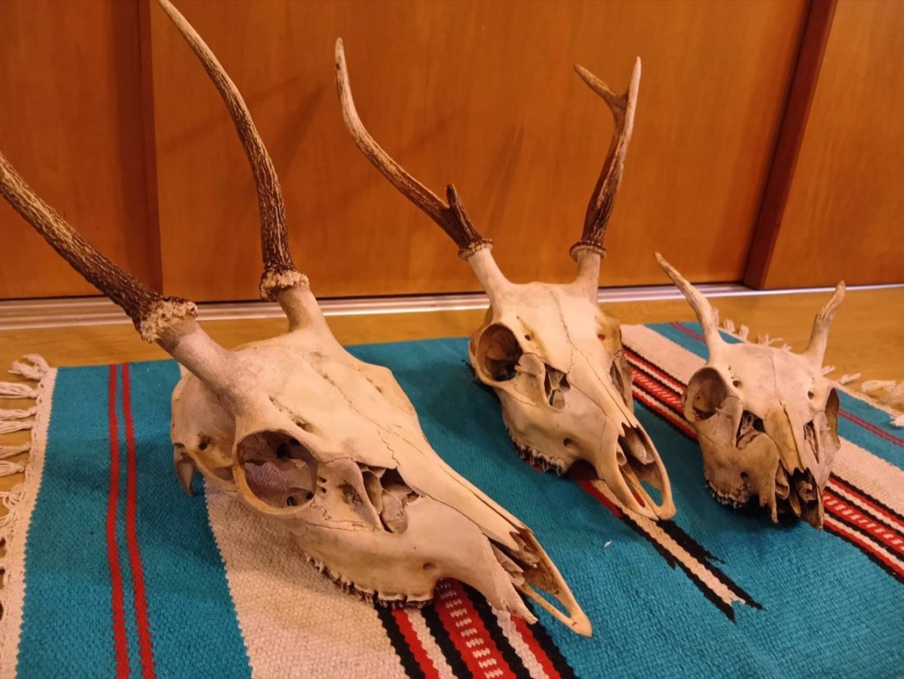

なぜ、道志村だったのか
はじめまして。地域おこし協力隊のジビエ分野で横浜からやってきた、小林鈴平（りんぺい）です。
私は道志村でハンターとして生きていく夢を叶えるためにやってきました。学生の頃からバイクでのソロキャンプが趣味で、多くのキャンプ場がある道志でも、シカやイノシシによる被害が多発していると聞きました。キャンプでお世話になった村の方々に、自分の夢を通して何か貢献できないか。その想いから移住を決意しました。

日本のジビエ事情
現在、日本各地で野生動物による野菜や果物など農作物への被害は、年間188億円にのぼると言われています。汗水流して育てた野菜を収穫間際に食べられ、踏み荒らされてしまったことで、農業から離れてしまう農家さんも少なくありません。
年間の農作物被害
シカ・イノシシ
利活用される割合
年間130万頭以上のシカやイノシシが捕獲されていますが、食肉やペットフードへ加工されているのは、そのうちの1割。残りの9割は捨てられてしまっているのが現状です。
命って、なんだろう
これだけの命を奪っていても、ジビエとして活かせているのはたった1割。その数字に私は愕然とし、命に対して申し訳なさを感じました。
もっと利活用できれば、高いお金を払って輸入されるお肉に頼ることなく食料自給率を上げ、農作物の被害防止にもつなげられるはずです。
奪った命に対して、
最後まで責任を持つ。
それが、せめてもの償いだと思う。




道志は「可能性の塊」
多くの方がご存じのとおり、道志村はキャンパーやバイカーの聖地。都心から山中湖へ抜ける国道413号線が村を貫き、毎日たくさんのドライバーが通ります。つまり道志は、私たちの取り組みを知ってもらい、見てもらえるチャンスの場でもあるのです。
キャンパーにはキャンプでの非日常的なお肉を。バイカーには、よりワイルドなお食事を。そうしたお客様に届ける「出口」がすでに出来上がっている道志村は、おいしいジビエをより多くの人に知ってもらえる可能性に満ちています。


その為の今とこれから、村と共に
奪った命を無駄にしないため。そして「道志では新鮮でおいしいジビエが食べられる」と多くの方に知っていただくために、日々「道の駅どうし」の加工トレーラーで捌き、お肉に加工し、道の駅内の売店やレストラン、キッチンカーなどで販売しています。
まだまだ20代のペーペーなので、より知識と経験を積むべく、日本各地のジビエ情報の収集や捕獲方法、捌きの勉強を続けています。今後はこの「道志ブランドジビエ」をより多くの方に知っていただくための宣伝活動や、革を活かした加工品にも挑戦していきます。


バイクやキャンプだけでなく、
ジビエでも有名な村にしてみせます。
世間知らずで非力な私だけでは到底成し遂げられません。猟友会や役場の方々、そして村民の皆様のお力をお借りできれば幸いです。この村と共に生きていく覚悟です。何卒よろしくお願いいたします。